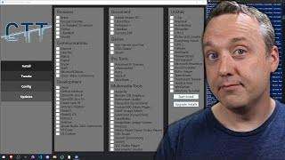

CTT APP
Arguably the best Windows debloat tool ever made, this tool runs off of PowerShell and it's made by
the one and only, Chris Titus Tech
"This is a tool that has evolved over several years and achieves much more than just
debloating a Windows install. I have expanded it to install the programs you select, which
is a bigger selection than ninite. The classic debloat is there, but also includes a tweaks
section with quality of life features. To round out everything, I have included my
recommended settings for Windows update that I use in a variety of businesses. Misuse of
this utility can break your install so please be careful and I do not provide any help or
assistance should this happen!"
-Chris Titus
How to run:
- Open powershell as administrator
- Run this command: "irm christitus.com/win | iex"
YouTube Tutorial:

TIW11/10
This is a windows app which sort of is like a "Just-To-Be-Sure" tool. I reccomend using it after
CTT's tool
Download tool
Reccomended: Download WinRar
Download WinRar
View add. Info (ctt script)
If you are a more advanced user, you can copy the whole code from the website and make the CTT app a .ps1 script, make sure to turn on powershell scripts before running it!
View CTT app code